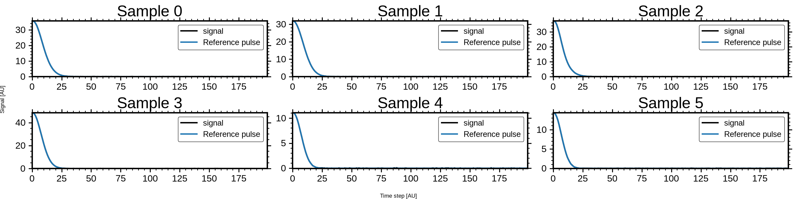

<!DOCTYPE html>


<html lang="en" data-content_root="../" >

  <head>
    <meta charset="utf-8" />
    <meta name="viewport" content="width=device-width, initial-scale=1.0" /><meta name="viewport" content="width=device-width, initial-scale=1" />

    <title>WaveNet Deconvolver: Reconstructing Clean Pulse Traces &#8212; DeepPeak  documentation</title>
  
  
  
  <script data-cfasync="false">
    document.documentElement.dataset.mode = localStorage.getItem("mode") || "";
    document.documentElement.dataset.theme = localStorage.getItem("theme") || "";
  </script>
  <!--
    this give us a css class that will be invisible only if js is disabled
  -->
  <noscript>
    <style>
      .pst-js-only { display: none !important; }

    </style>
  </noscript>
  
  <!-- Loaded before other Sphinx assets -->
  <link href="../_static/styles/theme.css?digest=8878045cc6db502f8baf" rel="stylesheet" />
<link href="../_static/styles/pydata-sphinx-theme.css?digest=8878045cc6db502f8baf" rel="stylesheet" />

    <link rel="stylesheet" type="text/css" href="../_static/pygments.css?v=03e43079" />
    <link rel="stylesheet" type="text/css" href="/opt/hostedtoolcache/Python/3.11.15/x64/lib/python3.11/site-packages/docs/source/_static/default.css" />
    <link rel="stylesheet" type="text/css" href="../_static/sg_gallery.css?v=d2d258e8" />
    <link rel="stylesheet" type="text/css" href="../_static/sg_gallery-binder.css?v=f4aeca0c" />
    <link rel="stylesheet" type="text/css" href="../_static/sg_gallery-dataframe.css?v=2082cf3c" />
    <link rel="stylesheet" type="text/css" href="../_static/sg_gallery-rendered-html.css?v=1277b6f3" />
    <link rel="stylesheet" type="text/css" href="../_static/default.css?v=4340df76" />
  
  <!-- So that users can add custom icons -->
  <script src="../_static/scripts/fontawesome.js?digest=8878045cc6db502f8baf"></script>
  <!-- Pre-loaded scripts that we'll load fully later -->
  <link rel="preload" as="script" href="../_static/scripts/bootstrap.js?digest=8878045cc6db502f8baf" />
<link rel="preload" as="script" href="../_static/scripts/pydata-sphinx-theme.js?digest=8878045cc6db502f8baf" />

    <script src="../_static/documentation_options.js?v=5929fcd5"></script>
    <script src="../_static/doctools.js?v=9bcbadda"></script>
    <script src="../_static/sphinx_highlight.js?v=dc90522c"></script>
    <script>DOCUMENTATION_OPTIONS.pagename = 'gallery/classifier_wavenet';</script>
    <script>
        DOCUMENTATION_OPTIONS.theme_version = '0.16.1';
        DOCUMENTATION_OPTIONS.theme_switcher_json_url = 'https://raw.githubusercontent.com/MartinPdeS/DeepPeak/documentation_page/version_switcher.json';
        DOCUMENTATION_OPTIONS.theme_switcher_version_match = 'v0.1.0';
        DOCUMENTATION_OPTIONS.show_version_warning_banner =
            true;
        </script>
    <link rel="icon" href="../_static/thumbnail.png"/>
    <link rel="index" title="Index" href="../genindex.html" />
    <link rel="search" title="Search" href="../search.html" />
    <link rel="next" title="Core Result Objects: Trace, DetectionResult, and MetricResult" href="core_result_objects.html" />
    <link rel="prev" title="DenseNet Deconvolver: Reconstructing Clean Pulse Traces" href="classifier_dense.html" />
  <meta name="viewport" content="width=device-width, initial-scale=1"/>
  <meta name="docsearch:language" content="en"/>
  <meta name="docsearch:version" content="0.1.0" />
  </head>
  
  
  <body data-bs-spy="scroll" data-bs-target=".bd-toc-nav" data-offset="180" data-bs-root-margin="0px 0px -60%" data-default-mode="">

  
  
  <div id="pst-skip-link" class="skip-link d-print-none"><a href="#main-content">Skip to main content</a></div>
  
  <div id="pst-scroll-pixel-helper"></div>
  
  <button type="button" class="btn rounded-pill" id="pst-back-to-top">
    <i class="fa-solid fa-arrow-up"></i>Back to top</button>

  
  <dialog id="pst-search-dialog">
    
<form class="bd-search d-flex align-items-center"
      action="../search.html"
      method="get">
  <i class="fa-solid fa-magnifying-glass"></i>
  <input type="search"
         class="form-control"
         name="q"
         placeholder="Search the docs ..."
         aria-label="Search the docs ..."
         autocomplete="off"
         autocorrect="off"
         autocapitalize="off"
         spellcheck="false"/>
  <span class="search-button__kbd-shortcut"><kbd class="kbd-shortcut__modifier">Ctrl</kbd>+<kbd>K</kbd></span>
</form>
  </dialog>

  <div class="pst-async-banner-revealer d-none">
  <aside id="bd-header-version-warning" class="d-none d-print-none" aria-label="Version warning"></aside>
</div>

  
    <header class="bd-header navbar navbar-expand-lg bd-navbar d-print-none">
<div class="bd-header__inner bd-page-width">
  <button class="pst-navbar-icon sidebar-toggle primary-toggle" aria-label="Site navigation">
    <span class="fa-solid fa-bars"></span>
  </button>
  
  
  <div class=" navbar-header-items__start">
    
      <div class="navbar-item">

  
    
  

<a class="navbar-brand logo" href="../index.html">
  
  
  
  
  
    
    
      
    
    
    
    
  
  
    <p class="title logo__title">DeepPeak</p>
  
</a></div>
    
  </div>
  
  <div class=" navbar-header-items">
    
    <div class="me-auto navbar-header-items__center">
      
        <div class="navbar-item">
<nav>
  <ul class="bd-navbar-elements navbar-nav">
    
<li class="nav-item ">
  <a class="nav-link nav-internal" href="../getting_started.html">
    Getting started
  </a>
</li>


<li class="nav-item ">
  <a class="nav-link nav-internal" href="../code.html">
    API reference
  </a>
</li>


<li class="nav-item ">
  <a class="nav-link nav-internal" href="../migration.html">
    Migration guide
  </a>
</li>


<li class="nav-item ">
  <a class="nav-link nav-internal" href="../testing.html">
    Testing and reproducibility
  </a>
</li>


<li class="nav-item current active">
  <a class="nav-link nav-internal" href="index.html">
    Examples
  </a>
</li>

            <li class="nav-item dropdown">
                <button class="btn dropdown-toggle nav-item" type="button"
                data-bs-toggle="dropdown" aria-expanded="false"
                aria-controls="pst-nav-more-links">
                    More
                </button>
                <ul id="pst-nav-more-links" class="dropdown-menu">
                    
<li class=" ">
  <a class="nav-link dropdown-item nav-internal" href="../theory.html">
    Theory
  </a>
</li>


<li class=" ">
  <a class="nav-link dropdown-item nav-internal" href="../references.html">
    References
  </a>
</li>

                </ul>
            </li>
            
  </ul>
</nav></div>
      
    </div>
    
    
    <div class="navbar-header-items__end">
      
        <div class="navbar-item navbar-persistent--container">
          

<button class="btn search-button-field search-button__button pst-js-only" title="Search" aria-label="Search" data-bs-placement="bottom" data-bs-toggle="tooltip">
 <i class="fa-solid fa-magnifying-glass"></i>
 <span class="search-button__default-text">Search</span>
 <span class="search-button__kbd-shortcut"><kbd class="kbd-shortcut__modifier">Ctrl</kbd>+<kbd class="kbd-shortcut__modifier">K</kbd></span>
</button>
        </div>
      
      
        <div class="navbar-item">
<div class="version-switcher__container dropdown pst-js-only">
  <button id="pst-version-switcher-button-2"
    type="button"
    class="version-switcher__button btn btn-sm dropdown-toggle"
    data-bs-toggle="dropdown"
    aria-haspopup="listbox"
    aria-controls="pst-version-switcher-list-2"
    aria-label="Version switcher list"
  >
    Choose version  <!-- this text may get changed later by javascript -->
    <span class="caret"></span>
  </button>
  <div id="pst-version-switcher-list-2"
    class="version-switcher__menu dropdown-menu list-group-flush py-0"
    role="listbox" aria-labelledby="pst-version-switcher-button-2">
    <!-- dropdown will be populated by javascript on page load -->
  </div>
</div></div>
      
        <div class="navbar-item"><ul class="navbar-icon-links"
    aria-label="Icon Links">
        <li class="nav-item">
          
          
          
          
          
          
          
          
          <a href="https://github.com/MartinPdeS/DeepPeak" title="GitHub" class="nav-link pst-navbar-icon" rel="noopener" target="_blank" data-bs-toggle="tooltip" data-bs-placement="bottom"><i class="fa-brands fa-github fa-lg" aria-hidden="true"></i>
            <span class="sr-only">GitHub</span></a>
        </li>
        <li class="nav-item">
          
          
          
          
          
          
          
          
          <a href="https://pypi.org/project/DeepPeak/" title="PyPI" class="nav-link pst-navbar-icon" rel="noopener" target="_blank" data-bs-toggle="tooltip" data-bs-placement="bottom"><i class="fa-solid fa-box fa-lg" aria-hidden="true"></i>
            <span class="sr-only">PyPI</span></a>
        </li>
        <li class="nav-item">
          
          
          
          
          
          
          
          
          <a href="https://anaconda.org/MartinPdeS/DeepPeak" title="Anaconda" class="nav-link pst-navbar-icon" rel="noopener" target="_blank" data-bs-toggle="tooltip" data-bs-placement="bottom"><i class="fa-brands fa-python fa-lg" aria-hidden="true"></i>
            <span class="sr-only">Anaconda</span></a>
        </li>
</ul></div>
      
    </div>
    
  </div>
  
  
    <div class="navbar-persistent--mobile">

<button class="btn search-button-field search-button__button pst-js-only" title="Search" aria-label="Search" data-bs-placement="bottom" data-bs-toggle="tooltip">
 <i class="fa-solid fa-magnifying-glass"></i>
 <span class="search-button__default-text">Search</span>
 <span class="search-button__kbd-shortcut"><kbd class="kbd-shortcut__modifier">Ctrl</kbd>+<kbd class="kbd-shortcut__modifier">K</kbd></span>
</button>
    </div>
  

  
    <button class="pst-navbar-icon sidebar-toggle secondary-toggle" aria-label="On this page">
      <span class="fa-solid fa-outdent"></span>
    </button>
  
</div>

    </header>
  

  <div class="bd-container">
    <div class="bd-container__inner bd-page-width">
      
      
      
      <dialog id="pst-primary-sidebar-modal"></dialog>
      <div id="pst-primary-sidebar" class="bd-sidebar-primary bd-sidebar">
        

  
  <div class="sidebar-header-items sidebar-primary__section">
    
    
      <div class="sidebar-header-items__center">
        
          
          
            <div class="navbar-item">
<nav>
  <ul class="bd-navbar-elements navbar-nav">
    
<li class="nav-item ">
  <a class="nav-link nav-internal" href="../getting_started.html">
    Getting started
  </a>
</li>


<li class="nav-item ">
  <a class="nav-link nav-internal" href="../code.html">
    API reference
  </a>
</li>


<li class="nav-item ">
  <a class="nav-link nav-internal" href="../migration.html">
    Migration guide
  </a>
</li>


<li class="nav-item ">
  <a class="nav-link nav-internal" href="../testing.html">
    Testing and reproducibility
  </a>
</li>


<li class="nav-item current active">
  <a class="nav-link nav-internal" href="index.html">
    Examples
  </a>
</li>


<li class="nav-item ">
  <a class="nav-link nav-internal" href="../theory.html">
    Theory
  </a>
</li>


<li class="nav-item ">
  <a class="nav-link nav-internal" href="../references.html">
    References
  </a>
</li>

  </ul>
</nav></div>
          
        
      </div>
    
    
    
      <div class="sidebar-header-items__end">
        
          <div class="navbar-item">
<div class="version-switcher__container dropdown pst-js-only">
  <button id="pst-version-switcher-button-3"
    type="button"
    class="version-switcher__button btn btn-sm dropdown-toggle"
    data-bs-toggle="dropdown"
    aria-haspopup="listbox"
    aria-controls="pst-version-switcher-list-3"
    aria-label="Version switcher list"
  >
    Choose version  <!-- this text may get changed later by javascript -->
    <span class="caret"></span>
  </button>
  <div id="pst-version-switcher-list-3"
    class="version-switcher__menu dropdown-menu list-group-flush py-0"
    role="listbox" aria-labelledby="pst-version-switcher-button-3">
    <!-- dropdown will be populated by javascript on page load -->
  </div>
</div></div>
        
          <div class="navbar-item"><ul class="navbar-icon-links"
    aria-label="Icon Links">
        <li class="nav-item">
          
          
          
          
          
          
          
          
          <a href="https://github.com/MartinPdeS/DeepPeak" title="GitHub" class="nav-link pst-navbar-icon" rel="noopener" target="_blank" data-bs-toggle="tooltip" data-bs-placement="bottom"><i class="fa-brands fa-github fa-lg" aria-hidden="true"></i>
            <span class="sr-only">GitHub</span></a>
        </li>
        <li class="nav-item">
          
          
          
          
          
          
          
          
          <a href="https://pypi.org/project/DeepPeak/" title="PyPI" class="nav-link pst-navbar-icon" rel="noopener" target="_blank" data-bs-toggle="tooltip" data-bs-placement="bottom"><i class="fa-solid fa-box fa-lg" aria-hidden="true"></i>
            <span class="sr-only">PyPI</span></a>
        </li>
        <li class="nav-item">
          
          
          
          
          
          
          
          
          <a href="https://anaconda.org/MartinPdeS/DeepPeak" title="Anaconda" class="nav-link pst-navbar-icon" rel="noopener" target="_blank" data-bs-toggle="tooltip" data-bs-placement="bottom"><i class="fa-brands fa-python fa-lg" aria-hidden="true"></i>
            <span class="sr-only">Anaconda</span></a>
        </li>
</ul></div>
        
      </div>
    
  </div>
  
    <div class="sidebar-primary-items__start sidebar-primary__section">
        <div class="sidebar-primary-item">
<nav class="bd-docs-nav bd-links"
     aria-label="Section Navigation">
  <p class="bd-links__title" role="heading" aria-level="1">Section Navigation</p>
  <div class="bd-toc-item navbar-nav"><ul class="current nav bd-sidenav">
<li class="toctree-l1"><a class="reference internal" href="amplitude_retrieval.html">Amplitude Retrieval for Overlapping Pulses</a></li>
<li class="toctree-l1"><a class="reference internal" href="classical_detection_pipeline.html">Classical Detection Pipeline with Stable Results</a></li>
<li class="toctree-l1"><a class="reference internal" href="classifier_autoencoder.html">U-Net Deconvolver: Reconstructing Clean Pulse Traces</a></li>
<li class="toctree-l1"><a class="reference internal" href="classifier_dense.html">DenseNet Deconvolver: Reconstructing Clean Pulse Traces</a></li>
<li class="toctree-l1 current active"><a class="current reference internal" href="#">WaveNet Deconvolver: Reconstructing Clean Pulse Traces</a></li>
<li class="toctree-l1"><a class="reference internal" href="core_result_objects.html">Core Result Objects: Trace, DetectionResult, and MetricResult</a></li>
<li class="toctree-l1"><a class="reference internal" href="data_generation.html">Generating and Visualizing Signal Data</a></li>
<li class="toctree-l1"><a class="reference internal" href="data_generation_custom_kernel.html">Generating data With a Custom Kernel</a></li>
<li class="toctree-l1"><a class="reference internal" href="noise_and_pulse_analysis.html">Noise and Pulse-Shape Analysis</a></li>
<li class="toctree-l1"><a class="reference internal" href="non_maximum_suppression.html">Non-Maximum Suppression for Gaussian Pulse Detection</a></li>
</ul>
</div>
</nav></div>
    </div>
  
  
  <div class="sidebar-primary-items__end sidebar-primary__section">
      <div class="sidebar-primary-item">
<div id="ethical-ad-placement"
      class="flat"
      data-ea-publisher="readthedocs"
      data-ea-type="readthedocs-sidebar"
      data-ea-manual="true">
</div></div>
  </div>


      </div>
      
      <main id="main-content" class="bd-main" role="main">
        
        
          <div class="bd-content">
            <div class="bd-article-container">
              
              <div class="bd-header-article d-print-none">
<div class="header-article-items header-article__inner">
  
    <div class="header-article-items__start">
      
        <div class="header-article-item">

<nav aria-label="Breadcrumb" class="d-print-none">
  <ul class="bd-breadcrumbs">
    
    <li class="breadcrumb-item breadcrumb-home">
      <a href="../index.html" class="nav-link" aria-label="Home">
        <i class="fa-solid fa-home"></i>
      </a>
    </li>
    
    <li class="breadcrumb-item"><a href="index.html" class="nav-link">Examples</a></li>
    
    <li class="breadcrumb-item active" aria-current="page"><span class="ellipsis">WaveNet Deconvolver: Reconstructing Clean Pulse Traces</span></li>
  </ul>
</nav>
</div>
      
    </div>
  
  
</div>
</div>
              
              
              
                
<div id="searchbox"></div>
                <article class="bd-article">
                  
  <div class="sphx-glr-download-link-note admonition note">
<p class="admonition-title">Note</p>
<p><a class="reference internal" href="#sphx-glr-download-gallery-classifier-wavenet-py"><span class="std std-ref">Go to the end</span></a>
to download the full example code.</p>
</div>
<section class="sphx-glr-example-title" id="wavenet-deconvolver-reconstructing-clean-pulse-traces">
<span id="sphx-glr-gallery-classifier-wavenet-py"></span><h1>WaveNet Deconvolver: Reconstructing Clean Pulse Traces<a class="headerlink" href="#wavenet-deconvolver-reconstructing-clean-pulse-traces" title="Link to this heading">#</a></h1>
<p>This example demonstrates how to train DeepPeak’s WaveNet as a deconvolver.</p>
<p>We will:
- Generate a dataset of noisy signals with random Gaussian peaks
- Build and train a WaveNet reconstruction model
- Visualize the training process and reconstructed signals</p>
<div class="admonition note">
<p class="admonition-title">Note</p>
<p>This example is fully reproducible and suitable for Sphinx-Gallery documentation.</p>
</div>
<section id="imports-and-reproducibility">
<h2>Imports and reproducibility<a class="headerlink" href="#imports-and-reproducibility" title="Link to this heading">#</a></h2>
<div class="highlight-Python notranslate"><div class="highlight"><pre><span></span><span class="kn">import</span><span class="w"> </span><span class="nn">numpy</span><span class="w"> </span><span class="k">as</span><span class="w"> </span><span class="nn">np</span>

<span class="kn">from</span><span class="w"> </span><span class="nn">DeepPeak.models</span><span class="w"> </span><span class="kn">import</span> <span class="n">WaveNet</span>
<span class="kn">from</span><span class="w"> </span><span class="nn">DeepPeak.generation</span><span class="w"> </span><span class="kn">import</span> <span class="n">SignalGenerator</span>
<span class="kn">from</span><span class="w"> </span><span class="nn">DeepPeak</span><span class="w"> </span><span class="kn">import</span> <span class="n">Gaussian</span><span class="p">,</span> <span class="n">UniformCount</span>

<span class="n">np</span><span class="o">.</span><span class="n">random</span><span class="o">.</span><span class="n">seed</span><span class="p">(</span><span class="mi">42</span><span class="p">)</span>
</pre></div>
</div>
</section>
<section id="generate-synthetic-dataset">
<h2>Generate synthetic dataset<a class="headerlink" href="#generate-synthetic-dataset" title="Link to this heading">#</a></h2>
<div class="highlight-Python notranslate"><div class="highlight"><pre><span></span><span class="n">NUM_PEAKS</span> <span class="o">=</span> <span class="mi">3</span>
<span class="n">SEQUENCE_LENGTH</span> <span class="o">=</span> <span class="mi">200</span>

<span class="n">pulse_kernel</span> <span class="o">=</span> <span class="n">Gaussian</span><span class="p">(</span>
    <span class="n">amplitude</span><span class="o">=</span><span class="p">(</span><span class="mi">10</span><span class="p">,</span> <span class="mi">20</span><span class="p">),</span>
    <span class="n">position</span><span class="o">=</span><span class="p">(</span><span class="mf">0.1</span><span class="p">,</span> <span class="mf">0.9</span><span class="p">),</span>
    <span class="n">width</span><span class="o">=</span><span class="p">(</span><span class="mi">5</span><span class="p">,</span> <span class="mi">10</span><span class="p">),</span>
<span class="p">)</span>

<span class="n">generator</span> <span class="o">=</span> <span class="n">SignalGenerator</span><span class="p">(</span><span class="n">sequence_length</span><span class="o">=</span><span class="n">SEQUENCE_LENGTH</span><span class="p">)</span>

<span class="n">dataset</span> <span class="o">=</span> <span class="n">generator</span><span class="o">.</span><span class="n">generate</span><span class="p">(</span>
    <span class="n">n_samples</span><span class="o">=</span><span class="mi">1000</span><span class="p">,</span>
    <span class="n">kernel</span><span class="o">=</span><span class="n">pulse_kernel</span><span class="p">,</span>
    <span class="n">peak_count</span><span class="o">=</span><span class="n">UniformCount</span><span class="p">(</span><span class="n">bounds</span><span class="o">=</span><span class="p">(</span><span class="mi">1</span><span class="p">,</span> <span class="n">NUM_PEAKS</span><span class="p">)),</span>
    <span class="n">noise_std</span><span class="o">=</span><span class="mf">0.03</span><span class="p">,</span>
    <span class="n">categorical_peak_count</span><span class="o">=</span><span class="kc">False</span><span class="p">,</span>
<span class="p">)</span>
</pre></div>
</div>
</section>
<section id="visualize-observed-and-clean-example-signals">
<h2>Visualize observed and clean example signals<a class="headerlink" href="#visualize-observed-and-clean-example-signals" title="Link to this heading">#</a></h2>
<div class="highlight-Python notranslate"><div class="highlight"><pre><span></span><span class="n">_</span> <span class="o">=</span> <span class="n">dataset</span><span class="o">.</span><span class="n">plot</span><span class="p">(</span>
    <span class="n">number_of_samples</span><span class="o">=</span><span class="mi">6</span><span class="p">,</span>
    <span class="n">number_of_columns</span><span class="o">=</span><span class="mi">3</span><span class="p">,</span>
    <span class="n">reference_pulse_trace</span><span class="o">=</span><span class="n">dataset</span><span class="o">.</span><span class="n">clean_signals</span><span class="p">,</span>
<span class="p">)</span>
</pre></div>
</div>
</section>
<section id="build-and-summarize-the-wavenet-deconvolver">
<h2>Build and summarize the WaveNet deconvolver<a class="headerlink" href="#build-and-summarize-the-wavenet-deconvolver" title="Link to this heading">#</a></h2>
<div class="highlight-Python notranslate"><div class="highlight"><pre><span></span><span class="n">wavenet</span> <span class="o">=</span> <span class="n">WaveNet</span><span class="p">(</span>
    <span class="n">sequence_length</span><span class="o">=</span><span class="n">SEQUENCE_LENGTH</span><span class="p">,</span>
    <span class="n">num_filters</span><span class="o">=</span><span class="mi">64</span><span class="p">,</span>
    <span class="n">num_dilation_layers</span><span class="o">=</span><span class="mi">3</span><span class="p">,</span>
    <span class="n">kernel_size</span><span class="o">=</span><span class="mi">4</span><span class="p">,</span>
    <span class="n">optimizer</span><span class="o">=</span><span class="s2">&quot;adam&quot;</span><span class="p">,</span>
    <span class="n">output_activation</span><span class="o">=</span><span class="s2">&quot;linear&quot;</span><span class="p">,</span>
    <span class="n">loss</span><span class="o">=</span><span class="s2">&quot;huber&quot;</span><span class="p">,</span>
    <span class="n">metrics</span><span class="o">=</span><span class="p">[</span><span class="s2">&quot;mae&quot;</span><span class="p">],</span>
<span class="p">)</span>

<span class="n">wavenet</span><span class="o">.</span><span class="n">build</span><span class="p">()</span>
</pre></div>
</div>
<div class="sphx-glr-script-out highlight-none notranslate"><div class="highlight"><pre><span></span>&lt;Functional name=WaveNetDeconvolver, built=True&gt;
</pre></div>
</div>
</section>
<section id="train-against-clean-pulse-traces">
<h2>Train against clean pulse traces<a class="headerlink" href="#train-against-clean-pulse-traces" title="Link to this heading">#</a></h2>
<div class="highlight-Python notranslate"><div class="highlight"><pre><span></span><span class="n">history</span> <span class="o">=</span> <span class="n">wavenet</span><span class="o">.</span><span class="n">fit</span><span class="p">(</span>
    <span class="n">dataset</span><span class="o">.</span><span class="n">signals</span><span class="p">,</span>
    <span class="n">dataset</span><span class="o">.</span><span class="n">clean_signals</span><span class="p">[</span><span class="o">...</span><span class="p">,</span> <span class="kc">None</span><span class="p">],</span>
    <span class="n">validation_split</span><span class="o">=</span><span class="mf">0.2</span><span class="p">,</span>
    <span class="n">epochs</span><span class="o">=</span><span class="mi">40</span><span class="p">,</span>
    <span class="n">batch_size</span><span class="o">=</span><span class="mi">64</span><span class="p">,</span>
<span class="p">)</span>
</pre></div>
</div>
<div class="sphx-glr-script-out highlight-none notranslate"><div class="highlight"><pre><span></span>Epoch 1/40

 1/13 ━━━━━━━━━━━━━━━━━━━━ 24s 2s/step - loss: 0.5878 - mae: 0.6413
 2/13 ━━━━━━━━━━━━━━━━━━━━ 0s 50ms/step - loss: 0.5373 - mae: 0.6154
 4/13 ━━━━━━━━━━━━━━━━━━━━ 0s 50ms/step - loss: 0.4074 - mae: 0.4811
 6/13 ━━━━━━━━━━━━━━━━━━━━ 0s 50ms/step - loss: 0.3444 - mae: 0.4154
 8/13 ━━━━━━━━━━━━━━━━━━━━ 0s 50ms/step - loss: 0.2830 - mae: 0.3491
 9/13 ━━━━━━━━━━━━━━━━━━━━ 0s 50ms/step - loss: 0.2716 - mae: 0.3357
10/13 ━━━━━━━━━━━━━━━━━━━━ 0s 50ms/step - loss: 0.2515 - mae: 0.3129
11/13 ━━━━━━━━━━━━━━━━━━━━ 0s 50ms/step - loss: 0.2357 - mae: 0.2968
12/13 ━━━━━━━━━━━━━━━━━━━━ 0s 50ms/step - loss: 0.2257 - mae: 0.2869
13/13 ━━━━━━━━━━━━━━━━━━━━ 3s 72ms/step - loss: 0.2191 - mae: 0.2799 - val_loss: 0.0129 - val_mae: 0.0433
Epoch 2/40

 1/13 ━━━━━━━━━━━━━━━━━━━━ 4s 392ms/step - loss: 0.0104 - mae: 0.0395
 2/13 ━━━━━━━━━━━━━━━━━━━━ 0s 50ms/step - loss: 0.0353 - mae: 0.0759 
 4/13 ━━━━━━━━━━━━━━━━━━━━ 0s 50ms/step - loss: 0.0361 - mae: 0.0778
 6/13 ━━━━━━━━━━━━━━━━━━━━ 0s 49ms/step - loss: 0.0408 - mae: 0.0805
 8/13 ━━━━━━━━━━━━━━━━━━━━ 0s 49ms/step - loss: 0.0365 - mae: 0.0741
10/13 ━━━━━━━━━━━━━━━━━━━━ 0s 49ms/step - loss: 0.0347 - mae: 0.0710
12/13 ━━━━━━━━━━━━━━━━━━━━ 0s 50ms/step - loss: 0.0344 - mae: 0.0714
13/13 ━━━━━━━━━━━━━━━━━━━━ 1s 55ms/step - loss: 0.0334 - mae: 0.0698 - val_loss: 0.0231 - val_mae: 0.0563
Epoch 3/40

 1/13 ━━━━━━━━━━━━━━━━━━━━ 0s 62ms/step - loss: 0.0219 - mae: 0.0539
 3/13 ━━━━━━━━━━━━━━━━━━━━ 0s 50ms/step - loss: 0.0158 - mae: 0.0441
 5/13 ━━━━━━━━━━━━━━━━━━━━ 0s 49ms/step - loss: 0.0168 - mae: 0.0442
 7/13 ━━━━━━━━━━━━━━━━━━━━ 0s 49ms/step - loss: 0.0153 - mae: 0.0416
 9/13 ━━━━━━━━━━━━━━━━━━━━ 0s 49ms/step - loss: 0.0140 - mae: 0.0402
11/13 ━━━━━━━━━━━━━━━━━━━━ 0s 49ms/step - loss: 0.0132 - mae: 0.0391
13/13 ━━━━━━━━━━━━━━━━━━━━ 0s 47ms/step - loss: 0.0131 - mae: 0.0392
13/13 ━━━━━━━━━━━━━━━━━━━━ 1s 54ms/step - loss: 0.0131 - mae: 0.0392 - val_loss: 0.0077 - val_mae: 0.0279
Epoch 4/40

 1/13 ━━━━━━━━━━━━━━━━━━━━ 0s 62ms/step - loss: 0.0070 - mae: 0.0273
 2/13 ━━━━━━━━━━━━━━━━━━━━ 0s 54ms/step - loss: 0.0104 - mae: 0.0343
 3/13 ━━━━━━━━━━━━━━━━━━━━ 0s 53ms/step - loss: 0.0079 - mae: 0.0291
 4/13 ━━━━━━━━━━━━━━━━━━━━ 0s 55ms/step - loss: 0.0078 - mae: 0.0289
 5/13 ━━━━━━━━━━━━━━━━━━━━ 0s 56ms/step - loss: 0.0089 - mae: 0.0306
 6/13 ━━━━━━━━━━━━━━━━━━━━ 0s 55ms/step - loss: 0.0079 - mae: 0.0287
 7/13 ━━━━━━━━━━━━━━━━━━━━ 0s 55ms/step - loss: 0.0085 - mae: 0.0301
 9/13 ━━━━━━━━━━━━━━━━━━━━ 0s 53ms/step - loss: 0.0077 - mae: 0.0289
11/13 ━━━━━━━━━━━━━━━━━━━━ 0s 53ms/step - loss: 0.0073 - mae: 0.0282
13/13 ━━━━━━━━━━━━━━━━━━━━ 0s 50ms/step - loss: 0.0073 - mae: 0.0284
13/13 ━━━━━━━━━━━━━━━━━━━━ 1s 57ms/step - loss: 0.0073 - mae: 0.0284 - val_loss: 0.0066 - val_mae: 0.0270
Epoch 5/40

 1/13 ━━━━━━━━━━━━━━━━━━━━ 0s 62ms/step - loss: 0.0074 - mae: 0.0282
 2/13 ━━━━━━━━━━━━━━━━━━━━ 0s 51ms/step - loss: 0.0048 - mae: 0.0221
 3/13 ━━━━━━━━━━━━━━━━━━━━ 0s 51ms/step - loss: 0.0044 - mae: 0.0221
 5/13 ━━━━━━━━━━━━━━━━━━━━ 0s 50ms/step - loss: 0.0040 - mae: 0.0212
 7/13 ━━━━━━━━━━━━━━━━━━━━ 0s 50ms/step - loss: 0.0036 - mae: 0.0201
 8/13 ━━━━━━━━━━━━━━━━━━━━ 0s 50ms/step - loss: 0.0036 - mae: 0.0204
 9/13 ━━━━━━━━━━━━━━━━━━━━ 0s 50ms/step - loss: 0.0033 - mae: 0.0194
11/13 ━━━━━━━━━━━━━━━━━━━━ 0s 50ms/step - loss: 0.0030 - mae: 0.0186
12/13 ━━━━━━━━━━━━━━━━━━━━ 0s 50ms/step - loss: 0.0029 - mae: 0.0182
13/13 ━━━━━━━━━━━━━━━━━━━━ 1s 55ms/step - loss: 0.0029 - mae: 0.0180 - val_loss: 0.0012 - val_mae: 0.0129
Epoch 6/40

 1/13 ━━━━━━━━━━━━━━━━━━━━ 0s 63ms/step - loss: 0.0015 - mae: 0.0138
 2/13 ━━━━━━━━━━━━━━━━━━━━ 0s 50ms/step - loss: 0.0016 - mae: 0.0143
 3/13 ━━━━━━━━━━━━━━━━━━━━ 0s 50ms/step - loss: 0.0013 - mae: 0.0135
 4/13 ━━━━━━━━━━━━━━━━━━━━ 0s 50ms/step - loss: 0.0015 - mae: 0.0146
 5/13 ━━━━━━━━━━━━━━━━━━━━ 0s 50ms/step - loss: 0.0013 - mae: 0.0135
 6/13 ━━━━━━━━━━━━━━━━━━━━ 0s 51ms/step - loss: 0.0013 - mae: 0.0136
 8/13 ━━━━━━━━━━━━━━━━━━━━ 0s 50ms/step - loss: 0.0013 - mae: 0.0131
10/13 ━━━━━━━━━━━━━━━━━━━━ 0s 50ms/step - loss: 0.0012 - mae: 0.0125
12/13 ━━━━━━━━━━━━━━━━━━━━ 0s 50ms/step - loss: 0.0011 - mae: 0.0120
13/13 ━━━━━━━━━━━━━━━━━━━━ 1s 55ms/step - loss: 0.0011 - mae: 0.0120 - val_loss: 9.0382e-04 - val_mae: 0.0114
Epoch 7/40

 1/13 ━━━━━━━━━━━━━━━━━━━━ 0s 62ms/step - loss: 8.0320e-04 - mae: 0.0110
 3/13 ━━━━━━━━━━━━━━━━━━━━ 0s 48ms/step - loss: 6.2384e-04 - mae: 0.0097
 5/13 ━━━━━━━━━━━━━━━━━━━━ 0s 49ms/step - loss: 6.6248e-04 - mae: 0.0098
 7/13 ━━━━━━━━━━━━━━━━━━━━ 0s 49ms/step - loss: 6.0532e-04 - mae: 0.0093
 9/13 ━━━━━━━━━━━━━━━━━━━━ 0s 49ms/step - loss: 5.8645e-04 - mae: 0.0092
11/13 ━━━━━━━━━━━━━━━━━━━━ 0s 49ms/step - loss: 5.7485e-04 - mae: 0.0091
13/13 ━━━━━━━━━━━━━━━━━━━━ 0s 47ms/step - loss: 5.7641e-04 - mae: 0.0092
13/13 ━━━━━━━━━━━━━━━━━━━━ 1s 54ms/step - loss: 5.7641e-04 - mae: 0.0092 - val_loss: 3.9878e-04 - val_mae: 0.0077
Epoch 8/40

 1/13 ━━━━━━━━━━━━━━━━━━━━ 0s 62ms/step - loss: 4.2947e-04 - mae: 0.0082
 3/13 ━━━━━━━━━━━━━━━━━━━━ 0s 49ms/step - loss: 4.5923e-04 - mae: 0.0081
 5/13 ━━━━━━━━━━━━━━━━━━━━ 0s 49ms/step - loss: 4.5099e-04 - mae: 0.0082
 7/13 ━━━━━━━━━━━━━━━━━━━━ 0s 49ms/step - loss: 4.5320e-04 - mae: 0.0082
 8/13 ━━━━━━━━━━━━━━━━━━━━ 0s 49ms/step - loss: 4.7487e-04 - mae: 0.0084
 9/13 ━━━━━━━━━━━━━━━━━━━━ 0s 49ms/step - loss: 4.4877e-04 - mae: 0.0082
11/13 ━━━━━━━━━━━━━━━━━━━━ 0s 49ms/step - loss: 4.5165e-04 - mae: 0.0081
13/13 ━━━━━━━━━━━━━━━━━━━━ 0s 47ms/step - loss: 4.5132e-04 - mae: 0.0082
13/13 ━━━━━━━━━━━━━━━━━━━━ 1s 54ms/step - loss: 4.5132e-04 - mae: 0.0082 - val_loss: 6.7874e-04 - val_mae: 0.0101
Epoch 9/40

 1/13 ━━━━━━━━━━━━━━━━━━━━ 0s 63ms/step - loss: 6.0132e-04 - mae: 0.0097
 2/13 ━━━━━━━━━━━━━━━━━━━━ 0s 50ms/step - loss: 4.1490e-04 - mae: 0.0080
 4/13 ━━━━━━━━━━━━━━━━━━━━ 0s 50ms/step - loss: 3.6722e-04 - mae: 0.0077
 6/13 ━━━━━━━━━━━━━━━━━━━━ 0s 49ms/step - loss: 3.8358e-04 - mae: 0.0077
 7/13 ━━━━━━━━━━━━━━━━━━━━ 0s 50ms/step - loss: 4.1299e-04 - mae: 0.0079
 9/13 ━━━━━━━━━━━━━━━━━━━━ 0s 50ms/step - loss: 4.0235e-04 - mae: 0.0078
11/13 ━━━━━━━━━━━━━━━━━━━━ 0s 50ms/step - loss: 4.0240e-04 - mae: 0.0079
13/13 ━━━━━━━━━━━━━━━━━━━━ 0s 48ms/step - loss: 3.9778e-04 - mae: 0.0078
13/13 ━━━━━━━━━━━━━━━━━━━━ 1s 55ms/step - loss: 3.9778e-04 - mae: 0.0078 - val_loss: 4.8312e-04 - val_mae: 0.0084
Epoch 10/40

 1/13 ━━━━━━━━━━━━━━━━━━━━ 7s 606ms/step - loss: 4.0189e-04 - mae: 0.0079
 2/13 ━━━━━━━━━━━━━━━━━━━━ 0s 50ms/step - loss: 3.3131e-04 - mae: 0.0071 
 3/13 ━━━━━━━━━━━━━━━━━━━━ 0s 50ms/step - loss: 3.9563e-04 - mae: 0.0078
 4/13 ━━━━━━━━━━━━━━━━━━━━ 0s 50ms/step - loss: 3.4899e-04 - mae: 0.0074
 5/13 ━━━━━━━━━━━━━━━━━━━━ 0s 50ms/step - loss: 3.5906e-04 - mae: 0.0075
 6/13 ━━━━━━━━━━━━━━━━━━━━ 0s 50ms/step - loss: 3.3304e-04 - mae: 0.0073
 8/13 ━━━━━━━━━━━━━━━━━━━━ 0s 50ms/step - loss: 3.1795e-04 - mae: 0.0072
10/13 ━━━━━━━━━━━━━━━━━━━━ 0s 50ms/step - loss: 3.0315e-04 - mae: 0.0070
12/13 ━━━━━━━━━━━━━━━━━━━━ 0s 50ms/step - loss: 3.1097e-04 - mae: 0.0071
13/13 ━━━━━━━━━━━━━━━━━━━━ 1s 55ms/step - loss: 3.0600e-04 - mae: 0.0070 - val_loss: 3.3959e-04 - val_mae: 0.0076
Epoch 11/40

 1/13 ━━━━━━━━━━━━━━━━━━━━ 0s 61ms/step - loss: 3.1016e-04 - mae: 0.0074
 3/13 ━━━━━━━━━━━━━━━━━━━━ 0s 49ms/step - loss: 2.5680e-04 - mae: 0.0066
 5/13 ━━━━━━━━━━━━━━━━━━━━ 0s 49ms/step - loss: 2.2625e-04 - mae: 0.0062
 6/13 ━━━━━━━━━━━━━━━━━━━━ 0s 50ms/step - loss: 2.2282e-04 - mae: 0.0061
 8/13 ━━━━━━━━━━━━━━━━━━━━ 0s 49ms/step - loss: 2.0454e-04 - mae: 0.0059
 9/13 ━━━━━━━━━━━━━━━━━━━━ 0s 50ms/step - loss: 2.0337e-04 - mae: 0.0059
11/13 ━━━━━━━━━━━━━━━━━━━━ 0s 49ms/step - loss: 2.0747e-04 - mae: 0.0059
12/13 ━━━━━━━━━━━━━━━━━━━━ 0s 50ms/step - loss: 2.0212e-04 - mae: 0.0059
13/13 ━━━━━━━━━━━━━━━━━━━━ 1s 55ms/step - loss: 2.0046e-04 - mae: 0.0059 - val_loss: 1.8122e-04 - val_mae: 0.0054
Epoch 12/40

 1/13 ━━━━━━━━━━━━━━━━━━━━ 0s 62ms/step - loss: 1.6790e-04 - mae: 0.0054
 3/13 ━━━━━━━━━━━━━━━━━━━━ 0s 49ms/step - loss: 1.5790e-04 - mae: 0.0053
 5/13 ━━━━━━━━━━━━━━━━━━━━ 0s 49ms/step - loss: 1.4973e-04 - mae: 0.0052
 7/13 ━━━━━━━━━━━━━━━━━━━━ 0s 49ms/step - loss: 1.5374e-04 - mae: 0.0052
 9/13 ━━━━━━━━━━━━━━━━━━━━ 0s 49ms/step - loss: 1.5925e-04 - mae: 0.0053
10/13 ━━━━━━━━━━━━━━━━━━━━ 0s 50ms/step - loss: 1.6487e-04 - mae: 0.0053
12/13 ━━━━━━━━━━━━━━━━━━━━ 0s 50ms/step - loss: 1.6577e-04 - mae: 0.0053
13/13 ━━━━━━━━━━━━━━━━━━━━ 1s 55ms/step - loss: 1.6610e-04 - mae: 0.0053 - val_loss: 1.8991e-04 - val_mae: 0.0055
Epoch 13/40

 1/13 ━━━━━━━━━━━━━━━━━━━━ 0s 63ms/step - loss: 2.1016e-04 - mae: 0.0057
 2/13 ━━━━━━━━━━━━━━━━━━━━ 0s 51ms/step - loss: 1.9609e-04 - mae: 0.0055
 3/13 ━━━━━━━━━━━━━━━━━━━━ 0s 51ms/step - loss: 1.7652e-04 - mae: 0.0053
 4/13 ━━━━━━━━━━━━━━━━━━━━ 0s 50ms/step - loss: 1.6694e-04 - mae: 0.0053
 6/13 ━━━━━━━━━━━━━━━━━━━━ 0s 50ms/step - loss: 1.6767e-04 - mae: 0.0053
 8/13 ━━━━━━━━━━━━━━━━━━━━ 0s 50ms/step - loss: 1.6034e-04 - mae: 0.0053
10/13 ━━━━━━━━━━━━━━━━━━━━ 0s 50ms/step - loss: 1.5828e-04 - mae: 0.0052
12/13 ━━━━━━━━━━━━━━━━━━━━ 0s 50ms/step - loss: 1.5850e-04 - mae: 0.0052
13/13 ━━━━━━━━━━━━━━━━━━━━ 1s 55ms/step - loss: 1.5680e-04 - mae: 0.0052 - val_loss: 2.1946e-04 - val_mae: 0.0057
Epoch 14/40

 1/13 ━━━━━━━━━━━━━━━━━━━━ 0s 62ms/step - loss: 2.2177e-04 - mae: 0.0057
 3/13 ━━━━━━━━━━━━━━━━━━━━ 0s 49ms/step - loss: 1.9422e-04 - mae: 0.0055
 5/13 ━━━━━━━━━━━━━━━━━━━━ 0s 49ms/step - loss: 1.8368e-04 - mae: 0.0054
 7/13 ━━━━━━━━━━━━━━━━━━━━ 0s 49ms/step - loss: 1.7726e-04 - mae: 0.0053
 9/13 ━━━━━━━━━━━━━━━━━━━━ 0s 49ms/step - loss: 1.6853e-04 - mae: 0.0053
10/13 ━━━━━━━━━━━━━━━━━━━━ 0s 49ms/step - loss: 1.7231e-04 - mae: 0.0053
11/13 ━━━━━━━━━━━━━━━━━━━━ 0s 49ms/step - loss: 1.7215e-04 - mae: 0.0053
13/13 ━━━━━━━━━━━━━━━━━━━━ 0s 47ms/step - loss: 1.7155e-04 - mae: 0.0053
13/13 ━━━━━━━━━━━━━━━━━━━━ 1s 54ms/step - loss: 1.7155e-04 - mae: 0.0053 - val_loss: 2.1029e-04 - val_mae: 0.0058
Epoch 15/40

 1/13 ━━━━━━━━━━━━━━━━━━━━ 0s 62ms/step - loss: 1.9957e-04 - mae: 0.0059
 3/13 ━━━━━━━━━━━━━━━━━━━━ 0s 49ms/step - loss: 1.6871e-04 - mae: 0.0053
 5/13 ━━━━━━━━━━━━━━━━━━━━ 0s 49ms/step - loss: 1.9593e-04 - mae: 0.0056
 6/13 ━━━━━━━━━━━━━━━━━━━━ 0s 49ms/step - loss: 1.8602e-04 - mae: 0.0054
 8/13 ━━━━━━━━━━━━━━━━━━━━ 0s 49ms/step - loss: 1.7572e-04 - mae: 0.0053
10/13 ━━━━━━━━━━━━━━━━━━━━ 0s 49ms/step - loss: 1.7316e-04 - mae: 0.0053
12/13 ━━━━━━━━━━━━━━━━━━━━ 0s 49ms/step - loss: 1.6938e-04 - mae: 0.0052
13/13 ━━━━━━━━━━━━━━━━━━━━ 1s 54ms/step - loss: 1.6832e-04 - mae: 0.0052 - val_loss: 1.6088e-04 - val_mae: 0.0049
Epoch 16/40

 1/13 ━━━━━━━━━━━━━━━━━━━━ 0s 62ms/step - loss: 1.4410e-04 - mae: 0.0048
 3/13 ━━━━━━━━━━━━━━━━━━━━ 0s 49ms/step - loss: 1.4607e-04 - mae: 0.0048
 4/13 ━━━━━━━━━━━━━━━━━━━━ 0s 50ms/step - loss: 1.4914e-04 - mae: 0.0048
 6/13 ━━━━━━━━━━━━━━━━━━━━ 0s 49ms/step - loss: 1.5453e-04 - mae: 0.0049
 8/13 ━━━━━━━━━━━━━━━━━━━━ 0s 49ms/step - loss: 1.5323e-04 - mae: 0.0049
10/13 ━━━━━━━━━━━━━━━━━━━━ 0s 49ms/step - loss: 1.5540e-04 - mae: 0.0049
11/13 ━━━━━━━━━━━━━━━━━━━━ 0s 49ms/step - loss: 1.5317e-04 - mae: 0.0049
13/13 ━━━━━━━━━━━━━━━━━━━━ 0s 47ms/step - loss: 1.5041e-04 - mae: 0.0049
13/13 ━━━━━━━━━━━━━━━━━━━━ 1s 54ms/step - loss: 1.5041e-04 - mae: 0.0049 - val_loss: 1.5950e-04 - val_mae: 0.0049
Epoch 17/40

 1/13 ━━━━━━━━━━━━━━━━━━━━ 0s 60ms/step - loss: 1.7822e-04 - mae: 0.0050
 3/13 ━━━━━━━━━━━━━━━━━━━━ 0s 49ms/step - loss: 1.5779e-04 - mae: 0.0048
 5/13 ━━━━━━━━━━━━━━━━━━━━ 0s 50ms/step - loss: 1.5861e-04 - mae: 0.0050
 7/13 ━━━━━━━━━━━━━━━━━━━━ 0s 50ms/step - loss: 1.5182e-04 - mae: 0.0049
 9/13 ━━━━━━━━━━━━━━━━━━━━ 0s 50ms/step - loss: 1.6793e-04 - mae: 0.0051
11/13 ━━━━━━━━━━━━━━━━━━━━ 0s 50ms/step - loss: 1.6701e-04 - mae: 0.0051
13/13 ━━━━━━━━━━━━━━━━━━━━ 0s 48ms/step - loss: 1.8116e-04 - mae: 0.0052
13/13 ━━━━━━━━━━━━━━━━━━━━ 1s 55ms/step - loss: 1.8116e-04 - mae: 0.0052 - val_loss: 2.5350e-04 - val_mae: 0.0061
Epoch 18/40

 1/13 ━━━━━━━━━━━━━━━━━━━━ 0s 63ms/step - loss: 2.4532e-04 - mae: 0.0061
 2/13 ━━━━━━━━━━━━━━━━━━━━ 0s 50ms/step - loss: 2.5941e-04 - mae: 0.0062
 4/13 ━━━━━━━━━━━━━━━━━━━━ 0s 50ms/step - loss: 3.8922e-04 - mae: 0.0076
 6/13 ━━━━━━━━━━━━━━━━━━━━ 0s 49ms/step - loss: 3.5957e-04 - mae: 0.0073
 8/13 ━━━━━━━━━━━━━━━━━━━━ 0s 49ms/step - loss: 3.4290e-04 - mae: 0.0072
 9/13 ━━━━━━━━━━━━━━━━━━━━ 0s 50ms/step - loss: 3.4690e-04 - mae: 0.0072
11/13 ━━━━━━━━━━━━━━━━━━━━ 0s 50ms/step - loss: 3.2011e-04 - mae: 0.0068
13/13 ━━━━━━━━━━━━━━━━━━━━ 0s 48ms/step - loss: 3.0939e-04 - mae: 0.0067
13/13 ━━━━━━━━━━━━━━━━━━━━ 1s 55ms/step - loss: 3.0939e-04 - mae: 0.0067 - val_loss: 3.7218e-04 - val_mae: 0.0074
Epoch 19/40

 1/13 ━━━━━━━━━━━━━━━━━━━━ 0s 61ms/step - loss: 3.4294e-04 - mae: 0.0071
 3/13 ━━━━━━━━━━━━━━━━━━━━ 0s 49ms/step - loss: 2.8696e-04 - mae: 0.0065
 5/13 ━━━━━━━━━━━━━━━━━━━━ 0s 49ms/step - loss: 2.5873e-04 - mae: 0.0062
 7/13 ━━━━━━━━━━━━━━━━━━━━ 0s 49ms/step - loss: 2.3074e-04 - mae: 0.0058
 9/13 ━━━━━━━━━━━━━━━━━━━━ 0s 49ms/step - loss: 2.1081e-04 - mae: 0.0056
11/13 ━━━━━━━━━━━━━━━━━━━━ 0s 49ms/step - loss: 1.9734e-04 - mae: 0.0055
13/13 ━━━━━━━━━━━━━━━━━━━━ 0s 47ms/step - loss: 1.9232e-04 - mae: 0.0054
13/13 ━━━━━━━━━━━━━━━━━━━━ 1s 54ms/step - loss: 1.9232e-04 - mae: 0.0054 - val_loss: 2.1435e-04 - val_mae: 0.0057
Epoch 20/40

 1/13 ━━━━━━━━━━━━━━━━━━━━ 0s 62ms/step - loss: 1.9905e-04 - mae: 0.0055
 3/13 ━━━━━━━━━━━━━━━━━━━━ 0s 49ms/step - loss: 2.3668e-04 - mae: 0.0061
 5/13 ━━━━━━━━━━━━━━━━━━━━ 0s 49ms/step - loss: 2.0236e-04 - mae: 0.0056
 7/13 ━━━━━━━━━━━━━━━━━━━━ 0s 50ms/step - loss: 1.8710e-04 - mae: 0.0053
 9/13 ━━━━━━━━━━━━━━━━━━━━ 0s 49ms/step - loss: 1.7550e-04 - mae: 0.0051
11/13 ━━━━━━━━━━━━━━━━━━━━ 0s 49ms/step - loss: 1.6958e-04 - mae: 0.0051
13/13 ━━━━━━━━━━━━━━━━━━━━ 0s 47ms/step - loss: 1.6477e-04 - mae: 0.0050
13/13 ━━━━━━━━━━━━━━━━━━━━ 1s 54ms/step - loss: 1.6477e-04 - mae: 0.0050 - val_loss: 1.8036e-04 - val_mae: 0.0052
Epoch 21/40

 1/13 ━━━━━━━━━━━━━━━━━━━━ 0s 61ms/step - loss: 1.5024e-04 - mae: 0.0049
 3/13 ━━━━━━━━━━━━━━━━━━━━ 0s 49ms/step - loss: 1.5329e-04 - mae: 0.0049
 4/13 ━━━━━━━━━━━━━━━━━━━━ 0s 49ms/step - loss: 1.5105e-04 - mae: 0.0050
 5/13 ━━━━━━━━━━━━━━━━━━━━ 0s 50ms/step - loss: 1.4973e-04 - mae: 0.0049
 6/13 ━━━━━━━━━━━━━━━━━━━━ 0s 50ms/step - loss: 1.5327e-04 - mae: 0.0049
 7/13 ━━━━━━━━━━━━━━━━━━━━ 0s 50ms/step - loss: 1.4955e-04 - mae: 0.0049
 9/13 ━━━━━━━━━━━━━━━━━━━━ 0s 50ms/step - loss: 1.5188e-04 - mae: 0.0048
10/13 ━━━━━━━━━━━━━━━━━━━━ 0s 50ms/step - loss: 1.5132e-04 - mae: 0.0048
11/13 ━━━━━━━━━━━━━━━━━━━━ 0s 50ms/step - loss: 1.5271e-04 - mae: 0.0049
12/13 ━━━━━━━━━━━━━━━━━━━━ 0s 50ms/step - loss: 1.5765e-04 - mae: 0.0049
13/13 ━━━━━━━━━━━━━━━━━━━━ 1s 55ms/step - loss: 1.5697e-04 - mae: 0.0049 - val_loss: 1.5762e-04 - val_mae: 0.0048
Epoch 22/40

 1/13 ━━━━━━━━━━━━━━━━━━━━ 7s 603ms/step - loss: 1.1807e-04 - mae: 0.0046
 2/13 ━━━━━━━━━━━━━━━━━━━━ 0s 51ms/step - loss: 1.5290e-04 - mae: 0.0046 
 3/13 ━━━━━━━━━━━━━━━━━━━━ 0s 51ms/step - loss: 1.4702e-04 - mae: 0.0046
 4/13 ━━━━━━━━━━━━━━━━━━━━ 0s 51ms/step - loss: 1.5594e-04 - mae: 0.0048
 6/13 ━━━━━━━━━━━━━━━━━━━━ 0s 50ms/step - loss: 1.5261e-04 - mae: 0.0047
 7/13 ━━━━━━━━━━━━━━━━━━━━ 0s 50ms/step - loss: 1.5595e-04 - mae: 0.0047
 8/13 ━━━━━━━━━━━━━━━━━━━━ 0s 50ms/step - loss: 1.5075e-04 - mae: 0.0047
10/13 ━━━━━━━━━━━━━━━━━━━━ 0s 50ms/step - loss: 1.4779e-04 - mae: 0.0047
12/13 ━━━━━━━━━━━━━━━━━━━━ 0s 50ms/step - loss: 1.4855e-04 - mae: 0.0047
13/13 ━━━━━━━━━━━━━━━━━━━━ 1s 55ms/step - loss: 1.5071e-04 - mae: 0.0047 - val_loss: 1.7340e-04 - val_mae: 0.0049
Epoch 23/40

 1/13 ━━━━━━━━━━━━━━━━━━━━ 0s 62ms/step - loss: 1.2512e-04 - mae: 0.0045
 3/13 ━━━━━━━━━━━━━━━━━━━━ 0s 50ms/step - loss: 1.2273e-04 - mae: 0.0045
 5/13 ━━━━━━━━━━━━━━━━━━━━ 0s 49ms/step - loss: 1.3214e-04 - mae: 0.0046
 7/13 ━━━━━━━━━━━━━━━━━━━━ 0s 49ms/step - loss: 1.4153e-04 - mae: 0.0046
 8/13 ━━━━━━━━━━━━━━━━━━━━ 0s 50ms/step - loss: 1.4261e-04 - mae: 0.0046
 9/13 ━━━━━━━━━━━━━━━━━━━━ 0s 50ms/step - loss: 1.4055e-04 - mae: 0.0046
11/13 ━━━━━━━━━━━━━━━━━━━━ 0s 50ms/step - loss: 1.3886e-04 - mae: 0.0046
13/13 ━━━━━━━━━━━━━━━━━━━━ 0s 48ms/step - loss: 1.4140e-04 - mae: 0.0046
13/13 ━━━━━━━━━━━━━━━━━━━━ 1s 55ms/step - loss: 1.4140e-04 - mae: 0.0046 - val_loss: 2.8983e-04 - val_mae: 0.0067
Epoch 24/40

 1/13 ━━━━━━━━━━━━━━━━━━━━ 0s 62ms/step - loss: 2.7260e-04 - mae: 0.0065
 3/13 ━━━━━━━━━━━━━━━━━━━━ 0s 49ms/step - loss: 3.3933e-04 - mae: 0.0072
 5/13 ━━━━━━━━━━━━━━━━━━━━ 0s 49ms/step - loss: 7.8233e-04 - mae: 0.0096
 7/13 ━━━━━━━━━━━━━━━━━━━━ 0s 49ms/step - loss: 0.0031 - mae: 0.0162    
 9/13 ━━━━━━━━━━━━━━━━━━━━ 0s 49ms/step - loss: 0.0029 - mae: 0.0162
11/13 ━━━━━━━━━━━━━━━━━━━━ 0s 49ms/step - loss: 0.0043 - mae: 0.0198
12/13 ━━━━━━━━━━━━━━━━━━━━ 0s 49ms/step - loss: 0.0041 - mae: 0.0193
13/13 ━━━━━━━━━━━━━━━━━━━━ 1s 54ms/step - loss: 0.0039 - mae: 0.0190 - val_loss: 0.0056 - val_mae: 0.0257
Epoch 25/40

 1/13 ━━━━━━━━━━━━━━━━━━━━ 0s 64ms/step - loss: 0.0051 - mae: 0.0245
 2/13 ━━━━━━━━━━━━━━━━━━━━ 0s 51ms/step - loss: 0.0054 - mae: 0.0260
 3/13 ━━━━━━━━━━━━━━━━━━━━ 0s 51ms/step - loss: 0.0039 - mae: 0.0212
 5/13 ━━━━━━━━━━━━━━━━━━━━ 0s 50ms/step - loss: 0.0036 - mae: 0.0200
 6/13 ━━━━━━━━━━━━━━━━━━━━ 0s 50ms/step - loss: 0.0045 - mae: 0.0224
 8/13 ━━━━━━━━━━━━━━━━━━━━ 0s 50ms/step - loss: 0.0041 - mae: 0.0207
10/13 ━━━━━━━━━━━━━━━━━━━━ 0s 50ms/step - loss: 0.0039 - mae: 0.0204
11/13 ━━━━━━━━━━━━━━━━━━━━ 0s 50ms/step - loss: 0.0040 - mae: 0.0209
13/13 ━━━━━━━━━━━━━━━━━━━━ 0s 48ms/step - loss: 0.0036 - mae: 0.0197
13/13 ━━━━━━━━━━━━━━━━━━━━ 1s 55ms/step - loss: 0.0036 - mae: 0.0197 - val_loss: 0.0022 - val_mae: 0.0163
Epoch 26/40

 1/13 ━━━━━━━━━━━━━━━━━━━━ 0s 62ms/step - loss: 0.0024 - mae: 0.0173
 3/13 ━━━━━━━━━━━━━━━━━━━━ 0s 50ms/step - loss: 0.0012 - mae: 0.0113
 5/13 ━━━━━━━━━━━━━━━━━━━━ 0s 50ms/step - loss: 9.1909e-04 - mae: 0.0099
 7/13 ━━━━━━━━━━━━━━━━━━━━ 0s 50ms/step - loss: 7.1974e-04 - mae: 0.0087
 8/13 ━━━━━━━━━━━━━━━━━━━━ 0s 50ms/step - loss: 6.7080e-04 - mae: 0.0085
10/13 ━━━━━━━━━━━━━━━━━━━━ 0s 50ms/step - loss: 5.7549e-04 - mae: 0.0078
11/13 ━━━━━━━━━━━━━━━━━━━━ 0s 50ms/step - loss: 5.6197e-04 - mae: 0.0078
13/13 ━━━━━━━━━━━━━━━━━━━━ 0s 48ms/step - loss: 5.3881e-04 - mae: 0.0077
13/13 ━━━━━━━━━━━━━━━━━━━━ 1s 55ms/step - loss: 5.3881e-04 - mae: 0.0077 - val_loss: 1.9516e-04 - val_mae: 0.0054
Epoch 27/40

 1/13 ━━━━━━━━━━━━━━━━━━━━ 0s 61ms/step - loss: 2.1574e-04 - mae: 0.0057
 3/13 ━━━━━━━━━━━━━━━━━━━━ 0s 50ms/step - loss: 2.5557e-04 - mae: 0.0058
 4/13 ━━━━━━━━━━━━━━━━━━━━ 0s 50ms/step - loss: 2.3815e-04 - mae: 0.0057
 5/13 ━━━━━━━━━━━━━━━━━━━━ 0s 50ms/step - loss: 3.2503e-04 - mae: 0.0065
 7/13 ━━━━━━━━━━━━━━━━━━━━ 0s 50ms/step - loss: 4.0954e-04 - mae: 0.0071
 9/13 ━━━━━━━━━━━━━━━━━━━━ 0s 50ms/step - loss: 6.6643e-04 - mae: 0.0085
10/13 ━━━━━━━━━━━━━━━━━━━━ 0s 50ms/step - loss: 9.1480e-04 - mae: 0.0098
11/13 ━━━━━━━━━━━━━━━━━━━━ 0s 50ms/step - loss: 0.0010 - mae: 0.0104    
13/13 ━━━━━━━━━━━━━━━━━━━━ 0s 48ms/step - loss: 0.0010 - mae: 0.0102
13/13 ━━━━━━━━━━━━━━━━━━━━ 1s 55ms/step - loss: 0.0010 - mae: 0.0102 - val_loss: 0.0096 - val_mae: 0.0343
Epoch 28/40

 1/13 ━━━━━━━━━━━━━━━━━━━━ 0s 61ms/step - loss: 0.0100 - mae: 0.0352
 3/13 ━━━━━━━━━━━━━━━━━━━━ 0s 50ms/step - loss: 0.0104 - mae: 0.0359
 5/13 ━━━━━━━━━━━━━━━━━━━━ 0s 49ms/step - loss: 0.0102 - mae: 0.0347
 6/13 ━━━━━━━━━━━━━━━━━━━━ 0s 50ms/step - loss: 0.0090 - mae: 0.0323
 8/13 ━━━━━━━━━━━━━━━━━━━━ 0s 50ms/step - loss: 0.0083 - mae: 0.0308
10/13 ━━━━━━━━━━━━━━━━━━━━ 0s 50ms/step - loss: 0.0071 - mae: 0.0278
12/13 ━━━━━━━━━━━━━━━━━━━━ 0s 49ms/step - loss: 0.0067 - mae: 0.0271
13/13 ━━━━━━━━━━━━━━━━━━━━ 1s 54ms/step - loss: 0.0065 - mae: 0.0265 - val_loss: 0.0076 - val_mae: 0.0309
Epoch 29/40

 1/13 ━━━━━━━━━━━━━━━━━━━━ 0s 63ms/step - loss: 0.0075 - mae: 0.0314
 2/13 ━━━━━━━━━━━━━━━━━━━━ 0s 51ms/step - loss: 0.0060 - mae: 0.0280
 3/13 ━━━━━━━━━━━━━━━━━━━━ 0s 51ms/step - loss: 0.0040 - mae: 0.0204
 5/13 ━━━━━━━━━━━━━━━━━━━━ 0s 50ms/step - loss: 0.0038 - mae: 0.0206
 7/13 ━━━━━━━━━━━━━━━━━━━━ 0s 50ms/step - loss: 0.0030 - mae: 0.0178
 9/13 ━━━━━━━━━━━━━━━━━━━━ 0s 50ms/step - loss: 0.0026 - mae: 0.0168
11/13 ━━━━━━━━━━━━━━━━━━━━ 0s 50ms/step - loss: 0.0023 - mae: 0.0158
13/13 ━━━━━━━━━━━━━━━━━━━━ 0s 48ms/step - loss: 0.0021 - mae: 0.0148
13/13 ━━━━━━━━━━━━━━━━━━━━ 1s 55ms/step - loss: 0.0021 - mae: 0.0148 - val_loss: 0.0015 - val_mae: 0.0134
Epoch 30/40

 1/13 ━━━━━━━━━━━━━━━━━━━━ 0s 63ms/step - loss: 0.0015 - mae: 0.0132
 3/13 ━━━━━━━━━━━━━━━━━━━━ 0s 50ms/step - loss: 9.6977e-04 - mae: 0.0107
 5/13 ━━━━━━━━━━━━━━━━━━━━ 0s 50ms/step - loss: 7.4973e-04 - mae: 0.0095
 6/13 ━━━━━━━━━━━━━━━━━━━━ 0s 50ms/step - loss: 6.8012e-04 - mae: 0.0090
 7/13 ━━━━━━━━━━━━━━━━━━━━ 0s 50ms/step - loss: 6.0473e-04 - mae: 0.0084
 8/13 ━━━━━━━━━━━━━━━━━━━━ 0s 50ms/step - loss: 5.6590e-04 - mae: 0.0082
 9/13 ━━━━━━━━━━━━━━━━━━━━ 0s 50ms/step - loss: 5.2693e-04 - mae: 0.0079
11/13 ━━━━━━━━━━━━━━━━━━━━ 0s 50ms/step - loss: 4.6249e-04 - mae: 0.0073
13/13 ━━━━━━━━━━━━━━━━━━━━ 0s 48ms/step - loss: 4.2347e-04 - mae: 0.0069
13/13 ━━━━━━━━━━━━━━━━━━━━ 1s 55ms/step - loss: 4.2347e-04 - mae: 0.0069 - val_loss: 1.6811e-04 - val_mae: 0.0048
Epoch 31/40

 1/13 ━━━━━━━━━━━━━━━━━━━━ 0s 61ms/step - loss: 1.7220e-04 - mae: 0.0046
 3/13 ━━━━━━━━━━━━━━━━━━━━ 0s 50ms/step - loss: 1.4349e-04 - mae: 0.0044
 5/13 ━━━━━━━━━━━━━━━━━━━━ 0s 49ms/step - loss: 1.5259e-04 - mae: 0.0046
 6/13 ━━━━━━━━━━━━━━━━━━━━ 0s 50ms/step - loss: 1.5268e-04 - mae: 0.0046
 8/13 ━━━━━━━━━━━━━━━━━━━━ 0s 50ms/step - loss: 1.6250e-04 - mae: 0.0047
10/13 ━━━━━━━━━━━━━━━━━━━━ 0s 50ms/step - loss: 1.7676e-04 - mae: 0.0049
11/13 ━━━━━━━━━━━━━━━━━━━━ 0s 50ms/step - loss: 1.8276e-04 - mae: 0.0050
12/13 ━━━━━━━━━━━━━━━━━━━━ 0s 50ms/step - loss: 1.8273e-04 - mae: 0.0050
13/13 ━━━━━━━━━━━━━━━━━━━━ 1s 55ms/step - loss: 1.7956e-04 - mae: 0.0049 - val_loss: 2.1580e-04 - val_mae: 0.0056
Epoch 32/40

 1/13 ━━━━━━━━━━━━━━━━━━━━ 0s 64ms/step - loss: 2.2433e-04 - mae: 0.0055
 2/13 ━━━━━━━━━━━━━━━━━━━━ 0s 52ms/step - loss: 1.9274e-04 - mae: 0.0049
 3/13 ━━━━━━━━━━━━━━━━━━━━ 0s 52ms/step - loss: 1.7347e-04 - mae: 0.0047
 4/13 ━━━━━━━━━━━━━━━━━━━━ 0s 52ms/step - loss: 1.9367e-04 - mae: 0.0049
 5/13 ━━━━━━━━━━━━━━━━━━━━ 0s 51ms/step - loss: 2.0975e-04 - mae: 0.0051
 7/13 ━━━━━━━━━━━━━━━━━━━━ 0s 51ms/step - loss: 1.9638e-04 - mae: 0.0050
 9/13 ━━━━━━━━━━━━━━━━━━━━ 0s 50ms/step - loss: 1.8943e-04 - mae: 0.0049
10/13 ━━━━━━━━━━━━━━━━━━━━ 0s 50ms/step - loss: 1.8184e-04 - mae: 0.0049
12/13 ━━━━━━━━━━━━━━━━━━━━ 0s 50ms/step - loss: 1.7543e-04 - mae: 0.0048
13/13 ━━━━━━━━━━━━━━━━━━━━ 1s 55ms/step - loss: 1.7525e-04 - mae: 0.0048 - val_loss: 1.3440e-04 - val_mae: 0.0042
Epoch 33/40

 1/13 ━━━━━━━━━━━━━━━━━━━━ 0s 63ms/step - loss: 1.0337e-04 - mae: 0.0037
 2/13 ━━━━━━━━━━━━━━━━━━━━ 0s 51ms/step - loss: 1.2411e-04 - mae: 0.0040
 3/13 ━━━━━━━━━━━━━━━━━━━━ 0s 51ms/step - loss: 1.8049e-04 - mae: 0.0048
 4/13 ━━━━━━━━━━━━━━━━━━━━ 0s 51ms/step - loss: 2.0007e-04 - mae: 0.0051
 5/13 ━━━━━━━━━━━━━━━━━━━━ 0s 51ms/step - loss: 1.8384e-04 - mae: 0.0048
 6/13 ━━━━━━━━━━━━━━━━━━━━ 0s 51ms/step - loss: 2.0547e-04 - mae: 0.0051
 7/13 ━━━━━━━━━━━━━━━━━━━━ 0s 51ms/step - loss: 2.6916e-04 - mae: 0.0057
 8/13 ━━━━━━━━━━━━━━━━━━━━ 0s 51ms/step - loss: 2.6451e-04 - mae: 0.0057
10/13 ━━━━━━━━━━━━━━━━━━━━ 0s 50ms/step - loss: 3.0860e-04 - mae: 0.0061
12/13 ━━━━━━━━━━━━━━━━━━━━ 0s 50ms/step - loss: 3.2348e-04 - mae: 0.0062
13/13 ━━━━━━━━━━━━━━━━━━━━ 1s 55ms/step - loss: 3.1914e-04 - mae: 0.0062 - val_loss: 2.0505e-04 - val_mae: 0.0054
Epoch 34/40

 1/13 ━━━━━━━━━━━━━━━━━━━━ 7s 605ms/step - loss: 1.8285e-04 - mae: 0.0054
 2/13 ━━━━━━━━━━━━━━━━━━━━ 0s 51ms/step - loss: 1.6733e-04 - mae: 0.0048 
 3/13 ━━━━━━━━━━━━━━━━━━━━ 0s 51ms/step - loss: 2.2733e-04 - mae: 0.0055
 5/13 ━━━━━━━━━━━━━━━━━━━━ 0s 50ms/step - loss: 2.6244e-04 - mae: 0.0061
 6/13 ━━━━━━━━━━━━━━━━━━━━ 0s 50ms/step - loss: 2.4641e-04 - mae: 0.0058
 8/13 ━━━━━━━━━━━━━━━━━━━━ 0s 50ms/step - loss: 2.3988e-04 - mae: 0.0057
10/13 ━━━━━━━━━━━━━━━━━━━━ 0s 50ms/step - loss: 2.6196e-04 - mae: 0.0059
12/13 ━━━━━━━━━━━━━━━━━━━━ 0s 50ms/step - loss: 2.4141e-04 - mae: 0.0056
13/13 ━━━━━━━━━━━━━━━━━━━━ 1s 55ms/step - loss: 2.3810e-04 - mae: 0.0056 - val_loss: 1.3286e-04 - val_mae: 0.0041
Epoch 35/40

 1/13 ━━━━━━━━━━━━━━━━━━━━ 0s 61ms/step - loss: 1.1314e-04 - mae: 0.0038
 2/13 ━━━━━━━━━━━━━━━━━━━━ 0s 51ms/step - loss: 1.8048e-04 - mae: 0.0046
 3/13 ━━━━━━━━━━━━━━━━━━━━ 0s 50ms/step - loss: 2.8089e-04 - mae: 0.0056
 5/13 ━━━━━━━━━━━━━━━━━━━━ 0s 50ms/step - loss: 2.9636e-04 - mae: 0.0060
 6/13 ━━━━━━━━━━━━━━━━━━━━ 0s 50ms/step - loss: 2.9387e-04 - mae: 0.0061
 8/13 ━━━━━━━━━━━━━━━━━━━━ 0s 50ms/step - loss: 3.2170e-04 - mae: 0.0064
10/13 ━━━━━━━━━━━━━━━━━━━━ 0s 50ms/step - loss: 2.9196e-04 - mae: 0.0060
12/13 ━━━━━━━━━━━━━━━━━━━━ 0s 49ms/step - loss: 2.8533e-04 - mae: 0.0060
13/13 ━━━━━━━━━━━━━━━━━━━━ 1s 54ms/step - loss: 2.7794e-04 - mae: 0.0059 - val_loss: 2.5547e-04 - val_mae: 0.0055
Epoch 36/40

 1/13 ━━━━━━━━━━━━━━━━━━━━ 0s 62ms/step - loss: 2.3658e-04 - mae: 0.0055
 3/13 ━━━━━━━━━━━━━━━━━━━━ 0s 49ms/step - loss: 2.8466e-04 - mae: 0.0062
 5/13 ━━━━━━━━━━━━━━━━━━━━ 0s 49ms/step - loss: 3.0138e-04 - mae: 0.0063
 7/13 ━━━━━━━━━━━━━━━━━━━━ 0s 49ms/step - loss: 3.5983e-04 - mae: 0.0068
 9/13 ━━━━━━━━━━━━━━━━━━━━ 0s 49ms/step - loss: 3.1834e-04 - mae: 0.0064
11/13 ━━━━━━━━━━━━━━━━━━━━ 0s 49ms/step - loss: 3.1405e-04 - mae: 0.0064
13/13 ━━━━━━━━━━━━━━━━━━━━ 0s 47ms/step - loss: 3.1266e-04 - mae: 0.0064
13/13 ━━━━━━━━━━━━━━━━━━━━ 1s 54ms/step - loss: 3.1266e-04 - mae: 0.0064 - val_loss: 1.8402e-04 - val_mae: 0.0051
Epoch 37/40

 1/13 ━━━━━━━━━━━━━━━━━━━━ 0s 62ms/step - loss: 1.3982e-04 - mae: 0.0047
 3/13 ━━━━━━━━━━━━━━━━━━━━ 0s 49ms/step - loss: 3.0573e-04 - mae: 0.0063
 4/13 ━━━━━━━━━━━━━━━━━━━━ 0s 50ms/step - loss: 2.6128e-04 - mae: 0.0058
 6/13 ━━━━━━━━━━━━━━━━━━━━ 0s 50ms/step - loss: 2.7989e-04 - mae: 0.0061
 8/13 ━━━━━━━━━━━━━━━━━━━━ 0s 50ms/step - loss: 2.8210e-04 - mae: 0.0060
10/13 ━━━━━━━━━━━━━━━━━━━━ 0s 50ms/step - loss: 2.6112e-04 - mae: 0.0058
11/13 ━━━━━━━━━━━━━━━━━━━━ 0s 50ms/step - loss: 2.6465e-04 - mae: 0.0059
13/13 ━━━━━━━━━━━━━━━━━━━━ 0s 48ms/step - loss: 2.5428e-04 - mae: 0.0058
13/13 ━━━━━━━━━━━━━━━━━━━━ 1s 55ms/step - loss: 2.5428e-04 - mae: 0.0058 - val_loss: 2.2618e-04 - val_mae: 0.0051
Epoch 38/40

 1/13 ━━━━━━━━━━━━━━━━━━━━ 0s 62ms/step - loss: 2.2872e-04 - mae: 0.0049
 2/13 ━━━━━━━━━━━━━━━━━━━━ 0s 51ms/step - loss: 2.9524e-04 - mae: 0.0062
 3/13 ━━━━━━━━━━━━━━━━━━━━ 0s 50ms/step - loss: 2.8927e-04 - mae: 0.0064
 5/13 ━━━━━━━━━━━━━━━━━━━━ 0s 50ms/step - loss: 2.2816e-04 - mae: 0.0056
 7/13 ━━━━━━━━━━━━━━━━━━━━ 0s 50ms/step - loss: 2.3467e-04 - mae: 0.0055
 9/13 ━━━━━━━━━━━━━━━━━━━━ 0s 50ms/step - loss: 2.7599e-04 - mae: 0.0059
10/13 ━━━━━━━━━━━━━━━━━━━━ 0s 50ms/step - loss: 2.9241e-04 - mae: 0.0060
12/13 ━━━━━━━━━━━━━━━━━━━━ 0s 50ms/step - loss: 2.7319e-04 - mae: 0.0058
13/13 ━━━━━━━━━━━━━━━━━━━━ 1s 56ms/step - loss: 2.8057e-04 - mae: 0.0059 - val_loss: 0.0011 - val_mae: 0.0120
Epoch 39/40

 1/13 ━━━━━━━━━━━━━━━━━━━━ 0s 61ms/step - loss: 0.0011 - mae: 0.0123
 3/13 ━━━━━━━━━━━━━━━━━━━━ 0s 49ms/step - loss: 0.0010 - mae: 0.0115
 5/13 ━━━━━━━━━━━━━━━━━━━━ 0s 50ms/step - loss: 6.7055e-04 - mae: 0.0089
 6/13 ━━━━━━━━━━━━━━━━━━━━ 0s 50ms/step - loss: 6.2067e-04 - mae: 0.0086
 7/13 ━━━━━━━━━━━━━━━━━━━━ 0s 50ms/step - loss: 5.7130e-04 - mae: 0.0083
 8/13 ━━━━━━━━━━━━━━━━━━━━ 0s 50ms/step - loss: 5.2143e-04 - mae: 0.0078
10/13 ━━━━━━━━━━━━━━━━━━━━ 0s 50ms/step - loss: 4.6274e-04 - mae: 0.0074
12/13 ━━━━━━━━━━━━━━━━━━━━ 0s 50ms/step - loss: 4.8605e-04 - mae: 0.0076
13/13 ━━━━━━━━━━━━━━━━━━━━ 1s 55ms/step - loss: 4.7333e-04 - mae: 0.0074 - val_loss: 2.5673e-04 - val_mae: 0.0052
Epoch 40/40

 1/13 ━━━━━━━━━━━━━━━━━━━━ 0s 62ms/step - loss: 2.7556e-04 - mae: 0.0051
 2/13 ━━━━━━━━━━━━━━━━━━━━ 0s 50ms/step - loss: 4.0296e-04 - mae: 0.0068
 3/13 ━━━━━━━━━━━━━━━━━━━━ 0s 50ms/step - loss: 5.4626e-04 - mae: 0.0081
 5/13 ━━━━━━━━━━━━━━━━━━━━ 0s 50ms/step - loss: 6.3336e-04 - mae: 0.0088
 7/13 ━━━━━━━━━━━━━━━━━━━━ 0s 50ms/step - loss: 5.3299e-04 - mae: 0.0080
 8/13 ━━━━━━━━━━━━━━━━━━━━ 0s 50ms/step - loss: 4.8165e-04 - mae: 0.0076
10/13 ━━━━━━━━━━━━━━━━━━━━ 0s 50ms/step - loss: 4.1413e-04 - mae: 0.0069
12/13 ━━━━━━━━━━━━━━━━━━━━ 0s 50ms/step - loss: 3.6546e-04 - mae: 0.0064
13/13 ━━━━━━━━━━━━━━━━━━━━ 1s 55ms/step - loss: 3.5735e-04 - mae: 0.0064 - val_loss: 2.1889e-04 - val_mae: 0.0053
</pre></div>
</div>
</section>
<section id="plot-training-history">
<h2>Plot training history<a class="headerlink" href="#plot-training-history" title="Link to this heading">#</a></h2>
<div class="highlight-Python notranslate"><div class="highlight"><pre><span></span><span class="n">_</span> <span class="o">=</span> <span class="n">wavenet</span><span class="o">.</span><span class="n">plot_model_history</span><span class="p">()</span>
</pre></div>
</div>
<p class="sphx-glr-timing"><strong>Total running time of the script:</strong> (0 minutes 34.262 seconds)</p>
<div class="sphx-glr-footer sphx-glr-footer-example docutils container" id="sphx-glr-download-gallery-classifier-wavenet-py">
<div class="sphx-glr-download sphx-glr-download-jupyter docutils container">
<p><a class="reference download internal" download="" href="../_downloads/b51bbbaf62ed0591b6ea1aacdcdca2b4/classifier_wavenet.ipynb"><code class="xref download docutils literal notranslate"><span class="pre">Download</span> <span class="pre">Jupyter</span> <span class="pre">notebook:</span> <span class="pre">classifier_wavenet.ipynb</span></code></a></p>
</div>
<div class="sphx-glr-download sphx-glr-download-python docutils container">
<p><a class="reference download internal" download="" href="../_downloads/cc4c1c17d782abd09da8aaa9126135c3/classifier_wavenet.py"><code class="xref download docutils literal notranslate"><span class="pre">Download</span> <span class="pre">Python</span> <span class="pre">source</span> <span class="pre">code:</span> <span class="pre">classifier_wavenet.py</span></code></a></p>
</div>
<div class="sphx-glr-download sphx-glr-download-zip docutils container">
<p><a class="reference download internal" download="" href="../_downloads/ac79b26e5d913c6b041667c1bfdfed06/classifier_wavenet.zip"><code class="xref download docutils literal notranslate"><span class="pre">Download</span> <span class="pre">zipped:</span> <span class="pre">classifier_wavenet.zip</span></code></a></p>
</div>
</div>
<p class="sphx-glr-signature"><a class="reference external" href="https://sphinx-gallery.github.io">Gallery generated by Sphinx-Gallery</a></p>
</section>
</section>


                </article>
              
              
              
              
              
            </div>
            
            
              
                <dialog id="pst-secondary-sidebar-modal"></dialog>
                <div id="pst-secondary-sidebar" class="bd-sidebar-secondary bd-toc"><div class="sidebar-secondary-items sidebar-secondary__inner">


  <div class="sidebar-secondary-item">
<div
    id="pst-page-navigation-heading-2"
    class="page-toc tocsection onthispage">
    <i class="fa-solid fa-list"></i> On this page
  </div>
  <nav class="bd-toc-nav page-toc" aria-labelledby="pst-page-navigation-heading-2">
    <ul class="visible nav section-nav flex-column">
<li class="toc-h2 nav-item toc-entry"><a class="reference internal nav-link" href="#imports-and-reproducibility">Imports and reproducibility</a></li>
<li class="toc-h2 nav-item toc-entry"><a class="reference internal nav-link" href="#generate-synthetic-dataset">Generate synthetic dataset</a></li>
<li class="toc-h2 nav-item toc-entry"><a class="reference internal nav-link" href="#visualize-observed-and-clean-example-signals">Visualize observed and clean example signals</a></li>
<li class="toc-h2 nav-item toc-entry"><a class="reference internal nav-link" href="#build-and-summarize-the-wavenet-deconvolver">Build and summarize the WaveNet deconvolver</a></li>
<li class="toc-h2 nav-item toc-entry"><a class="reference internal nav-link" href="#train-against-clean-pulse-traces">Train against clean pulse traces</a></li>
<li class="toc-h2 nav-item toc-entry"><a class="reference internal nav-link" href="#plot-training-history">Plot training history</a></li>
</ul>
  </nav></div>

  <div class="sidebar-secondary-item">
  <div role="note" aria-label="source link">
    <h3>This Page</h3>
    <ul class="this-page-menu">
      <li><a href="../_sources/gallery/classifier_wavenet.rst.txt"
            rel="nofollow">Show Source</a></li>
    </ul>
   </div></div>

</div></div>
              
            
          </div>
          <footer class="bd-footer-content">
            
          </footer>
        
      </main>
    </div>
  </div>
  
  <!-- Scripts loaded after <body> so the DOM is not blocked -->
  <script defer src="../_static/scripts/bootstrap.js?digest=8878045cc6db502f8baf"></script>
<script defer src="../_static/scripts/pydata-sphinx-theme.js?digest=8878045cc6db502f8baf"></script>

  <footer class="bd-footer">
<div class="bd-footer__inner bd-page-width">
  
    <div class="footer-items__start">
      
        <div class="footer-item">

  <p class="copyright">
    
      © Copyright 2024, Martin Poinsinet de Sivry-Houle.
      <br/>
    
  </p>
</div>
      
    </div>
  
  
  
    <div class="footer-items__end">
      
        <div class="footer-item">

  <p class="sphinx-version">
    Created using <a href="https://www.sphinx-doc.org/">Sphinx</a> 8.2.3.
    <br/>
  </p>
</div>
      
        <div class="footer-item">
<p class="theme-version">
  <!-- # L10n: Setting the PST URL as an argument as this does not need to be localized -->
  Built with the <a href="https://pydata-sphinx-theme.readthedocs.io/en/stable/index.html">PyData Sphinx Theme</a> 0.16.1.
</p></div>
      
    </div>
  
</div>

  </footer>
  </body>
</html>